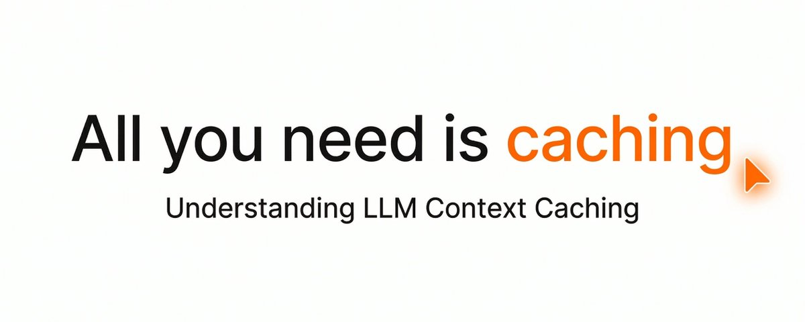
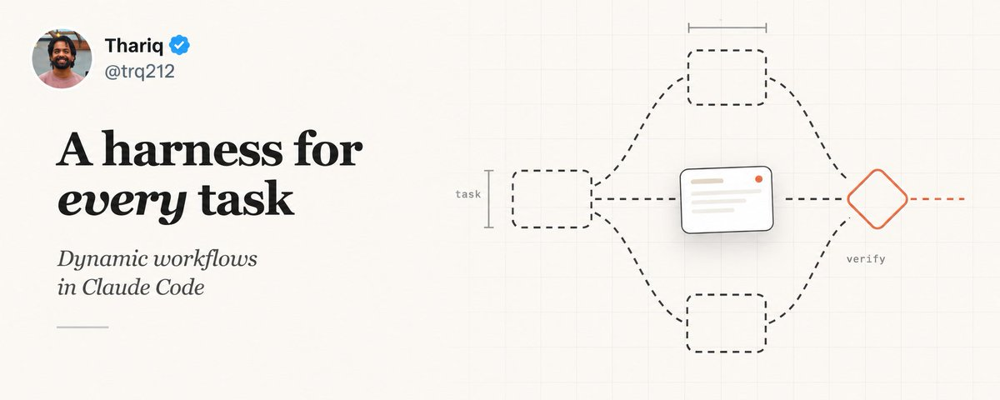

内容立场
不做 PPT 式展望。只分享自己踩过坑、验证过的一手路径。
把 Claude、Codex、Gemini 从演示变成每天能用的工作流。 一手折腾、能复现、能省 token、能出结果。 面向品牌方：让你的产品被中文 AI Builder 圈层真正用起来，而不是刷一眼就划走。
已合作 飞书 · Bitget · ZenMux · 蚂蚁百灵 · 网易UU远程 … 全部品牌 →AI Builder。在信息噪音里只做一件事：把模型能力压成可复制的日常操作。 从 token 省法、额度重置技巧，到 multi-agent 工作流、模型选型与组合拳—— 能跑通、能复现、能马上用，才值得发出来。
不做 PPT 式展望。只分享自己踩过坑、验证过的一手路径。
重度 AI 使用者、独立开发者、想把模型塞进真实工作流的团队。
高密度短帖 + 可收藏长线程。热点快评，技巧可复用。
按真实阅读量排序：点赞、转发、书签都是 X 上的实时数据，点进去就是原帖。
上个月我把 Claude 从 Pro 升到 Max，$200 一个月，心想这下总该够用了吧……
早上打开 Claude Code，敲第一句话，2%～10% 的套餐额度没了……这 token 到底花在哪了？

天才团队不会被埋没，马斯克是真伯乐。25 年初 Cursor 和 Claude 珠联璧合……
Claude Code 现在能即时写出属于它自己的 harness，为手头的任务量身定制……

突然发现之前折腾什么 Tailscale + tmux、Claude remotion、Codex 远程全是浪费时间……真正顺手的手机远程编程只要一步。
有没有人跟我一样？Claude Code 5 小时重置一次，并以当天第一次使用开始计算周期……
已完成商单内容累计曝光超 200 万，持续更新。
面向 AI 工具、开发者产品、效率软件与内容平台。要真实体验，不要念稿。
深度上手 + 优缺点直说。适合 Claude / Codex 生态、Agent 平台、远程开发与算力工具。
可收藏的操作贴：步骤清晰、可复现。适合需要「教用户怎么用」的增长场景。
月度内容包、系列实测、社群联动。适合要持续出现在中文 AI Builder 圈层的品牌。
工具选型、工作流答疑、闭门分享。要整套落地？看 Agent 搭建 & 培训 →
产品链接 + 形式 + 预算区间，工作日 24–48h 内回复。
确认角度、交付物与排期。不合适会直说，不浪费彼此时间。
深度体验后产出内容，关键信息发布前与你确认。
按排期发布，同步阅读 / 互动 / 书签等真实数据。
发帖之外的另一条线：帮企业把 Agent 从想法搭到上线，再把团队教会。要能进业务的交付，不要 Demo 演示。
客服、获客、内容、数据分析 Agent 都搭过；天天泡在 Claude / Codex / Gemini 一线， 更懂 AI 落地的真实痛点——您提需求，方案我来。
接上业务知识库：自动应答、工单分流、复杂问题转人工。
线索收集、筛选、触达与跟进自动化，销售只接热线索。
从选题、成稿到多平台分发，一条流水线批量出内容。
自然语言查数、自动出报表，业务同学不再排队等取数。
一家跨境电商团队，选品和报表两条流程全靠人工。拆完需求后交付了两套可独立运行的本地工具： 一套自动跑选品筛选，一套把杂乱的平台报表转成能直接用的表。 使用的是完全不写代码的运营同事——双击图标就能跑， 数据全程留在本机，不上传、不出内网。
交付前开了三个 Agent 并行交叉评审代码（工程 / 测试 / 体验三个视角）， 互不通气却独立指向同一批隐患，修完才上线。这也是我做交付的默认流程。
品牌方 / 产品方 / 企业团队 / 代理：发一封简短说明即可。 建议包含产品链接、合作形式、预算区间、期望时间，我会尽快回复。